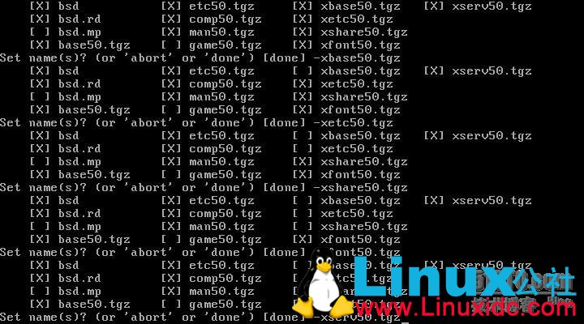

一个很简单的逻辑问题是，你的东西越大，越复杂，其包含bug的可能性就越大。你用C语言写一个HelloWorld跟你写一个快速傅立叶变换对比，很明显，快速傅立叶的代码量更大，出错的可能性也越大，需要调试的时间也更长。当你累计书写了几十万行代码的时候，如果发生了内存溢出，你会比helloworld花费更长的时间去调试。以此类推到安全性上，也是一样。
所以，在这个层面上，我推荐OpenBSD，Theo de Raadt的理论是，简单即是美。
可能了解OpenBSD的人并不多，但是说到OpenSSH可能无人不知，OpenSSH即是OpenBSD最先编写，并移植到其他操作系统包括Linux。OpenBSD以其自创建以来就不断强调的高安全性，赢得很多包括政府，军队，乃至大公司的支持。我们听说过的，包括银行，金融，信用卡，美国陆军的DARPA(虽然因为de Raadt骂美国政府被取消了经费支持)，乃至Adobe。OpenBSD作为高度强调安全性的系统，甚至被国际黑客破解大赛所禁用，唯一的原因是：无法破解。其诞生(1995)到现在已经快20年了，在默认安装情况下，仅发现了两个远程漏洞，这真是无法超越的成就。
但是，OpenBSD也有其自身的问题，FFS的读取和写入速度一直是大家所痛苦的根源，所以，在这里我打算拿OpenBSD作为OpenVPN的登录管理服务器使用。因为其强劲和安全的路由交换性能还是非常值得称道的。
其实影响一个操作系统在英语国家以外地区的推广，除了语言问题就是语言问题了。BSD系统对于本地化的支持似乎都不太好，这些系统的开发者们更注重安全，性能和稳定，所以国内使用BSD的人凤毛麟角。但是用好了，的确是节省成本和一劳永逸。
选择安装OpenBSD的版本为最新发布的5.0。相比FreeBSD，OpenBSD的安装界面更加简陋，全命令行方式。另外，罗嗦一句，相比FreeBSD，OpenBSD硬件驱动的支持更糟，所以想体验OpenBSD，请找尽可能老旧的可使用的PC或服务器，否则很有可能垮在驱动问题上。de Raadt以其固执的态度和无所不说的嘴，赢得了各大硬件厂商的不支持。
一、安装OpenBSD
按I安装，要大写I
回车
输入主机名 localhost，你也可以输别的
选择网卡，回车即可。

我是虚拟机演示，没有分配地址，做dhcp，装完会说明如何手动配置网络地址。
接下来会问你是否分配IPv6和是否配置其他网卡，连按三个回车即可。
然后会问你root密码，输两次即可
然后会问是否开机启动sshd，当然，否则怎么登录。
问ntpd是否启动，默认是否，可以改成yes
问是否启动X windows，不，不要那些占用系统资源的东西，所以输入no
然后输入时区，如果没有提示，则输入Asia/Shanghai即可
接下来就是硬盘分区了。一路回车即可
接下来是格式化硬盘和选择安装包如果你不需要某个安装包，就打 "-包名.tgz"
比如我不想要game50.tgz，则打 "-game50.tgz" 回车。
全部选择完成后，直接敲回车即可。

然后就开始安装系统了。这时我们说一下，硬盘分区默认即可，但你可以按照自己的分区去定义。通常它自己不会把/usr定的很大，这样对于我们用ports安装软件不太方便，但是没关系，我们有别的解决办法，当然最好还是自己定义一下。
选择扩展的软件安装路径，直接回车即可。
安装完成。Congratulations！下节我说说配置网络安装软件和OpenVPN的安装配置。
取出光盘，敲reboot重启，就可以感受OpenBSD了